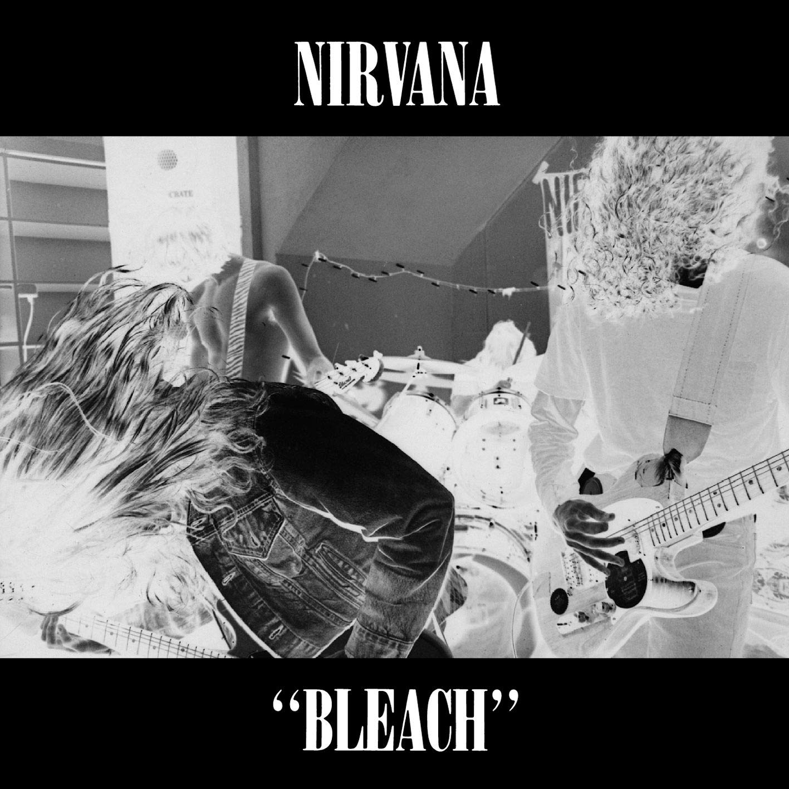

|
O Nirvana possui três álbuns de estúdio: "Bleach" (1989), "Nevermind" (1991) e "In Utero" (1993). O álbum "Nevermind" é o mais famoso e inclui o hit "Smells Like Teen Spirit", que se tornou um hino da geração grunge. O álbum "In Utero" é conhecido por seu som mais cru e agressivo, refletindo a evolução musical da banda. O álbum "Bleach" apresenta um som mais cru e pesado, refletindo as influências punk e hardcore da banda. Todos os álbuns do Nirvana são considerados marcos importantes na carreira da banda e são apreciados por fãs e críticos por sua energia crua e autenticidade. |
O album de maior sucesso do Nirvana, "Nevermind", alcançou o topo das paradas musicais e é frequentemente citado como um dos melhores álbuns de todos os tempos. Ele ajudou a popularizar o gênero grunge e a estabelecer o Nirvana como uma das bandas mais influentes da década de 1990. O álbum "In Utero" também foi bem recebido pela crítica e pelos fãs, consolidando ainda mais a reputação da banda. |
Bleach |
||
|---|---|---|
|
 |
O primeiro álbum do Nirvana, "Bleach", foi lançado em 1989. O álbum apresenta um som mais cru e pesado, refletindo as influências punk e hardcore da banda. Embora não tenha alcançado o mesmo sucesso comercial que os álbuns posteriores, "Bleach" é considerado um marco importante na carreira do Nirvana e é apreciado por fãs e críticos por sua energia bruta e autenticidade. |
A historia desse album é que ele foi gravado com um orçamento muito baixo, e a banda teve que usar equipamentos emprestados para completar a gravação. O álbum foi lançado pela Sub Pop Records, uma gravadora independente de Seattle, e ajudou a estabelecer o Nirvana como uma das bandas mais promissoras da cena musical local. Apesar de não ter alcançado o mesmo sucesso comercial que os álbuns posteriores, "Bleach" é considerado um marco importante na carreira do Nirvana e é apreciado por fãs e críticos por sua energia bruta e autenticidade. |
|
O album possui as seguintes musicas:
|
||